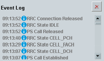

Event Log
The event log area reports events and errors like connection state changes, RRC connection establishment/release, and authentication failure.

Event log in the main view
Each entry consists of a timestamp, an icon indicating the category of the event and a short text describing the event. Meaning of the category icons:  = information, warning and error.
= information, warning and error.
Press the button to the right to clear the displayed event entries.
Remote command: